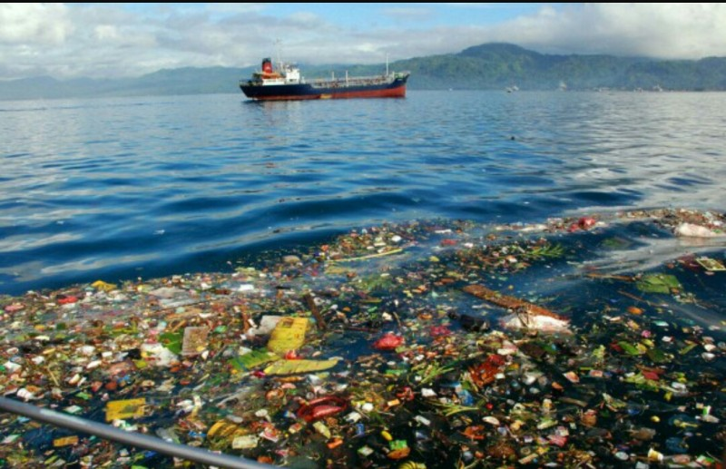
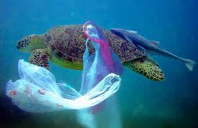
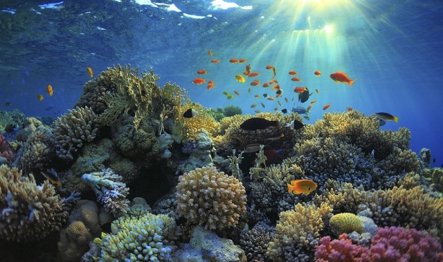
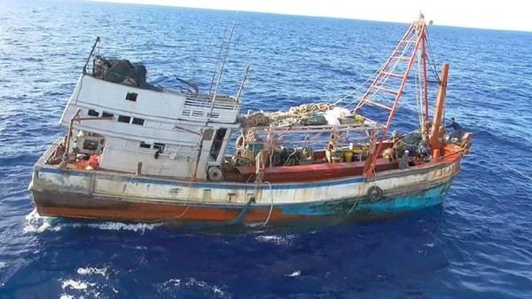

.png)


   
Sebagai negara maritim terbesar, dengan kekayaan laut yang luas, Indonesia memainkan peran penting dalam upaya perlindungan laut. Bersama California, dan negara lain, Indonesia terlibat dalam:
Indonesia berkomitmen untuk mengurangi sampah plastik di lautan, sampai 70% pada tahun 2025. Karena, sampah plastik di laut itu dapat mengancam ekosistem laut, ia dapat merusak habitat, mengganggu kehidupan di laut, dan mencemari rantai makanan. Melalui kerja sama dengan California, Indonesia mengadopsi teknologi pengelolaan sampah laut dan meningkatkan kesadaran masyarakat tentang pentingnya mengurangi sampah plastik. Contoh Tindakan Konkrit : Penggunaan Teknologi Pengumpul Sampah Laut. Pelarangan Kantong Plastik Sekali Pakai, Program Edukasi di Sekolah dan Komunitas
Terumbu karang dan mangrove adalah dua komponen yang sangat penting dalam ekosistem laut. Terumbu karang menyediakan habitat bagi berbagai jenis ikan dan makhluk laut, sedangkan mangrove melindungi pantai dari erosi dan menjadi tempat berkemabgn biak bagi banyak spesies. Maka dari itu, Indonesia bekerja sama dengan berbagai organisasi internasional untuk memperkuat upaya konservasi ini. Contoh Tindakan Konkrit : Rehabilitasi Terumbu karang, Program Mangrove Nasional, Zona Perlindungan Laut
Indonesia sering sekali menghadapi tantangan besar dari praktik perikanan ilegal, yang mengancam keberlanjutan populasi ikan dan merusak habitat laut. Dalam kerja sama dengan California dan negara-negara lain, Indonesia memperkuat sistem pengawasan dan penegakkan hukum di wilayah lautnya. Hal tersebut dilaksanakan untuk melindungi populasi ikan dari eksploitasi berlebihan. Contoh Tindakan Konkrit : Pelacakan Kapal Ilegal dengan Teknologi Satelit, Penangkapan dan Penindakan Terhadap Kapal Ilegal, Kerja Sama Regional untuk Penanganan Perikanan Ilegal